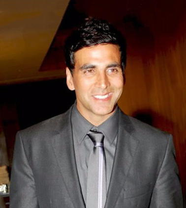

Akshay Kumar pronounced [əkˈʂəj kʊˈmɑːɾ](born 9 September 1967) is an Indian film actor, producer and Martial artist. Kumar has appeared in over 100 films in Bollywood. He is based in Mumbai. Kumar is known for his hit movies. Kumar recently dubbed for the Hindi version of the movie Transformers: Dark of the Moon. Kumar was the voice actor for the role of Optimus Prime. This is one of the key characters in the film. He did the dubbing role as a gift for his son, Aarav. Optimus Prime was Aarav's favorite character so Kumar did it for free.[5] Kumar was one of the highest paid actor in Bollywood in 2022.[6] He has established himself as a leading contemporary actor in the Hindi cinema. He is also best known for his roles in the Housefull film series
In 2009, Kumar started the Hari Om Entertainment production company.[7] In 2012, Kumar launched his next production house Grazing Goat Pictures. Their first production, OMG! (Oh My God!), had a slow opening, but because of word of mouth it picked up and then was declared a super hit.
Shows he starred in to do the Hindi dubbing of characters
